Stability Diagrams
Contents
Consider a mechanical system of the type
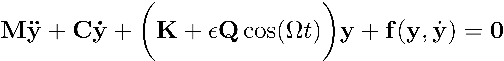
Here, 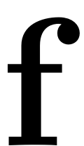 is a nonlinear function and is a linear matrix. This constitutes a generalised 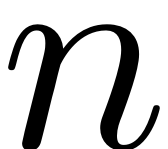-dimensional Mathieu equation. The system is parametrically excited with amplitude  . This excitation can destabilise the trivial fixed point with 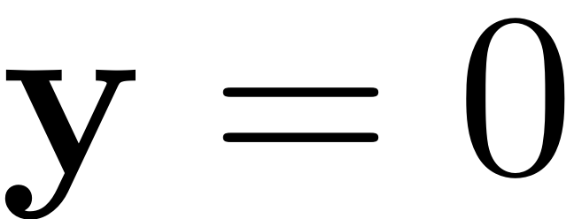, 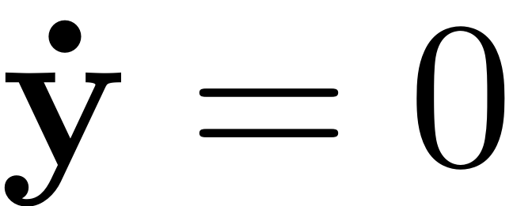. The change of stability of this behaviour depending on the excitation frequency 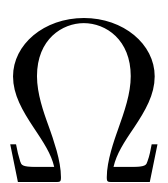 and amplitude is commonly documented in a stability diagram. There, regions of instability show up as resonance tongues, which occur when the excitation frequency assumes subharmonic resonances with a mode of the system. The resonance of main interest is the principal parametric resonance where
. This excitation can destabilise the trivial fixed point with 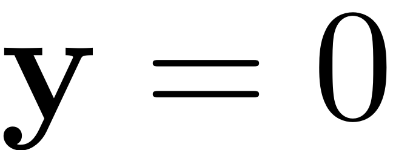, 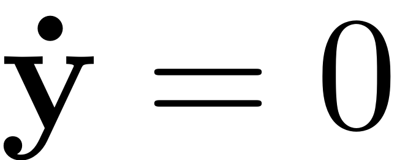. The change of stability of this behaviour depending on the excitation frequency 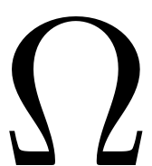 and amplitude is commonly documented in a stability diagram. There, regions of instability show up as resonance tongues, which occur when the excitation frequency assumes subharmonic resonances with a mode of the system. The resonance of main interest is the principal parametric resonance where
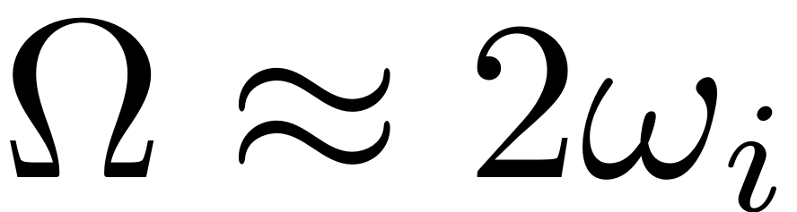
for some eigenfrequency 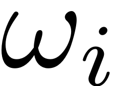 of the mechanical system. By changing either the frequency or amplitude, a bifurcation of the stability type is detected, when crossing the boundary of the resonance tounge. Consequently families of this bifurcation can be continued to get the resonance tongue itself. As damping is decreased, it gets more pointed and closes in to the 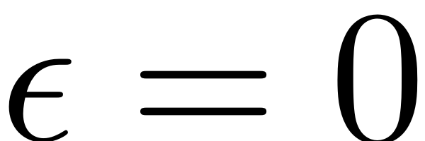 axis, as indicated by the dotted line.
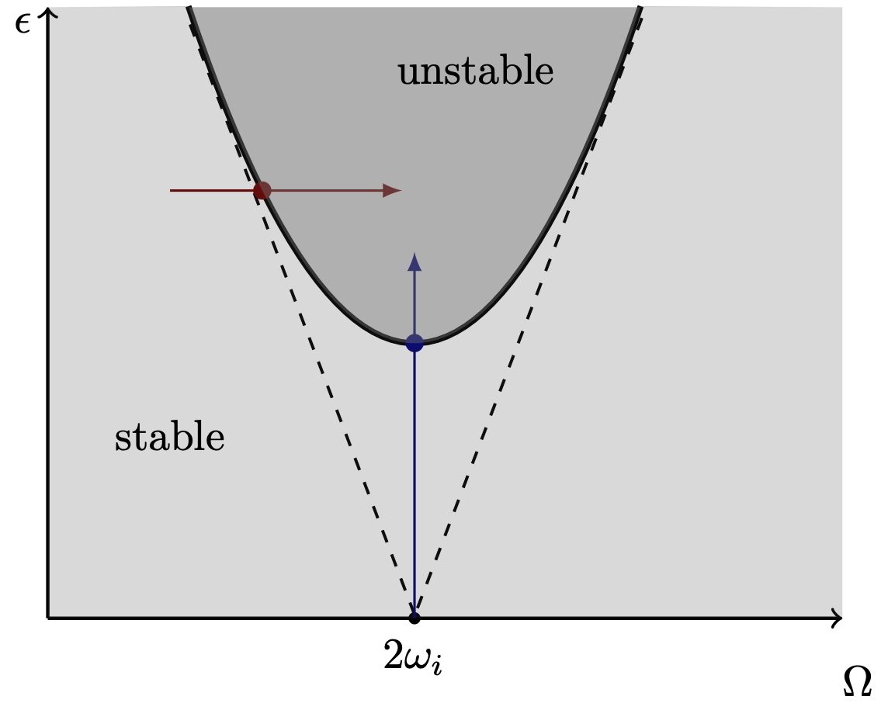
To efficiently extract such resonance tongues, we compute the SSM tangent to the  -th modal subspace, to obtain an exact ROM for the dynamics of the system. It serves as the ODE which is analysed using continuation with COCO. Detailed treatment of the theory and algorithm can also be accessed in the related publication (Thurnher, Haller & Jain, 2023).
-th modal subspace, to obtain an exact ROM for the dynamics of the system. It serves as the ODE which is analysed using continuation with COCO. Detailed treatment of the theory and algorithm can also be accessed in the related publication (Thurnher, Haller & Jain, 2023).
After setting up the dynamical system, and the SSM object S, the boundary region of stable response can be detected by using the following built-in method:
SD = S.extract_Stability_Diagram(resModes, order, OmegaRange,epRange,'amp', p0,'PD',PlotSD);
The input arguments are as follows
- resModes is an array which indicates the 2D master subspace, which is in 2:1 resonance with the parametric excitation.
- order denotes the order of the non-autonomous SSM approximation which is to be computed.
- OmegaRange denotes the frequency range over which the diagram should be extracted.
- epRange denotes the excitation amplitude range for which the diagram should be constructed. Note that SSM-theory is local in nature, and that it computes asymptotic series expansions in this parameter - so this parameter may not be chosen to be arbitrarily large.
- 'amp' or 'freq' : which indicates the initial parameter which should be chosen for continuation - see the figure above for reference.
- p0 : an initial set of parameters for finding the location of the resonance tongue. For small excitation frequencies and low damping parameters, the initial guess for should be chosen to be zero for fast convergence.
- 'PD' or 'SN' : depending on which parameter is chosen, the tongue is sought in terms of period-doubling or saddle-node bifurcations. See the explanation below
- PlotSD : a boolean parameter for plotting the result of the computation.
Saddle-Node and Period-Doubling Bifurcations
We write the mechanical system in the standard form. By extending the resulting dynamical system
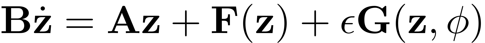
to an autonomous system of variables  the trivial fixed point
the trivial fixed point  of the paremtrically excited system can be interpreted as the periodic orbit 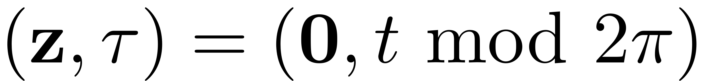. Any change of the stability behaviour of this periodic orbit is then given by some bifurcation. At the stability boundary of the principal resonance with nontrivial periodic orbits with response period
of the paremtrically excited system can be interpreted as the periodic orbit 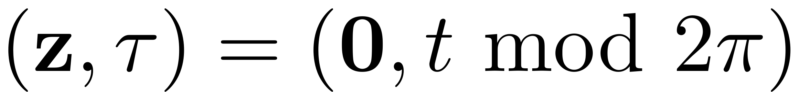. Any change of the stability behaviour of this periodic orbit is then given by some bifurcation. At the stability boundary of the principal resonance with nontrivial periodic orbits with response period  emerge. If continuation of 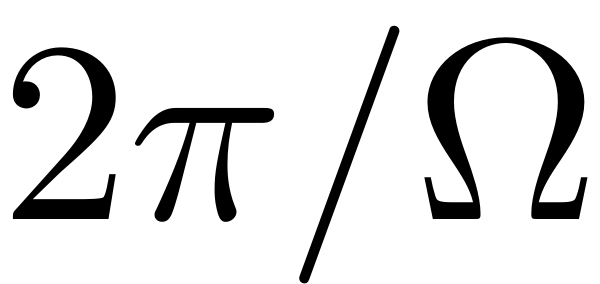 periodic orbits is used then these bifurcations show up as period doubling ('PD') bifurcations. Initially continuing 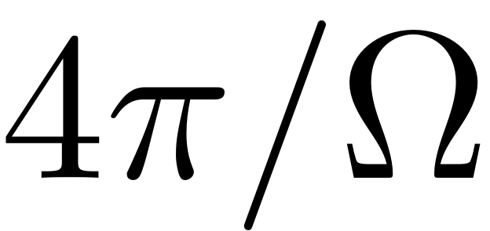 periodic orbits leads to a saddle node ('SN') bifurcation. The function extract_Stability_Diagram allows to chose between these two options for constructing the stability diagram.
emerge. If continuation of 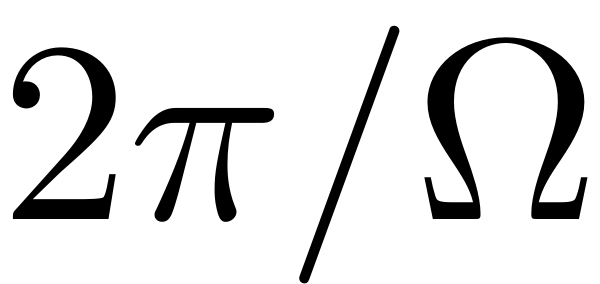 periodic orbits is used then these bifurcations show up as period doubling ('PD') bifurcations. Initially continuing 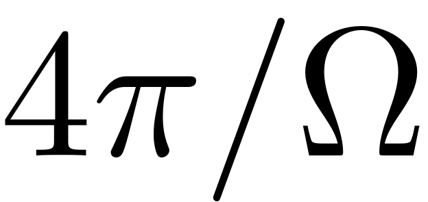 periodic orbits leads to a saddle node ('SN') bifurcation. The function extract_Stability_Diagram allows to chose between these two options for constructing the stability diagram.
Emergent response
The boundary region of unstable response is at the same time a branch point, from which non-trivial periodic orbits emerge. An illustration of this is shown in the following figure, which shows the response for a 2-dimensional, nonlinear Mathieu equation. The response obtained from the ROM provided by the dynamics on the SSM is verified using collocation on the full dynamical system:
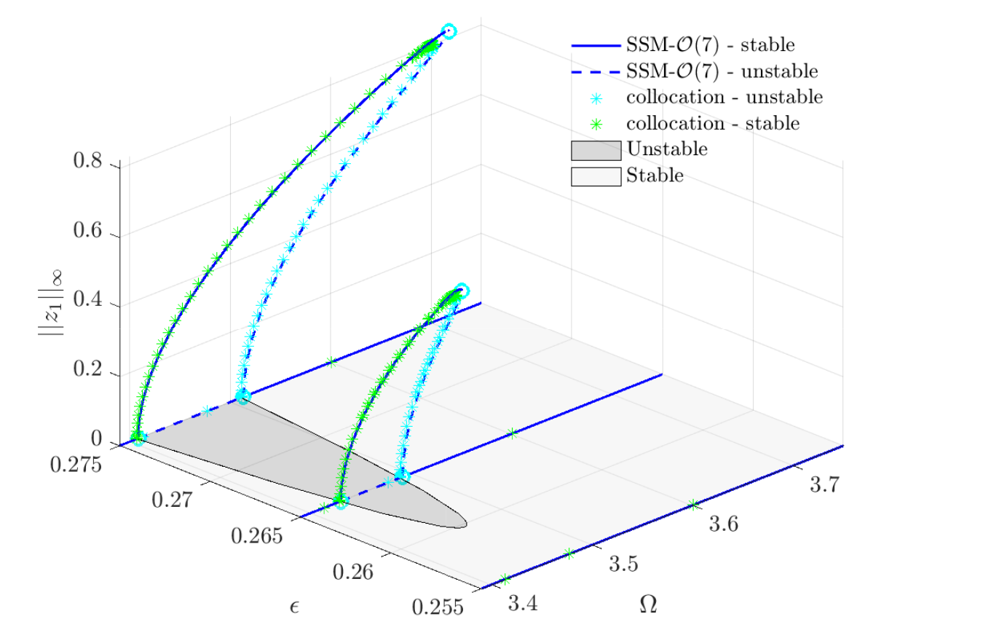